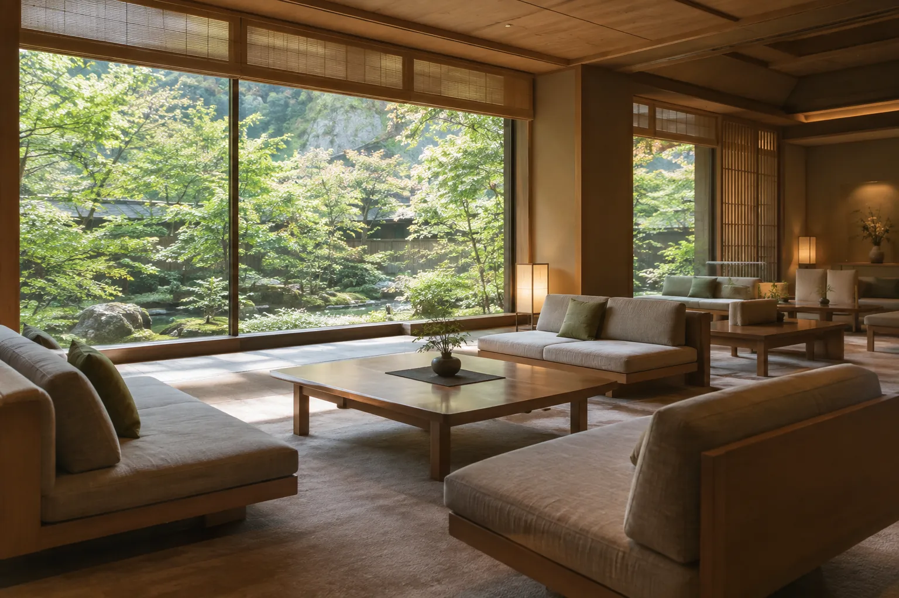
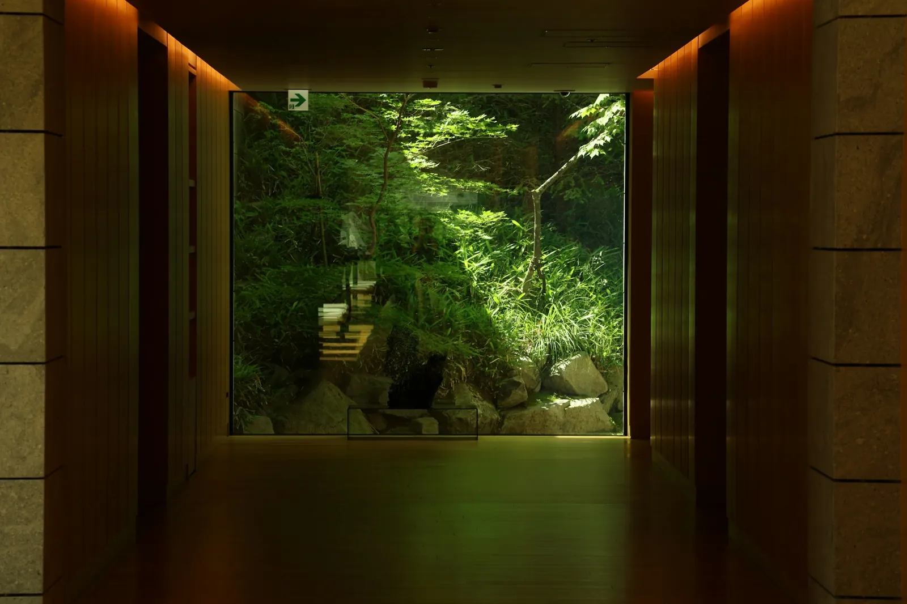
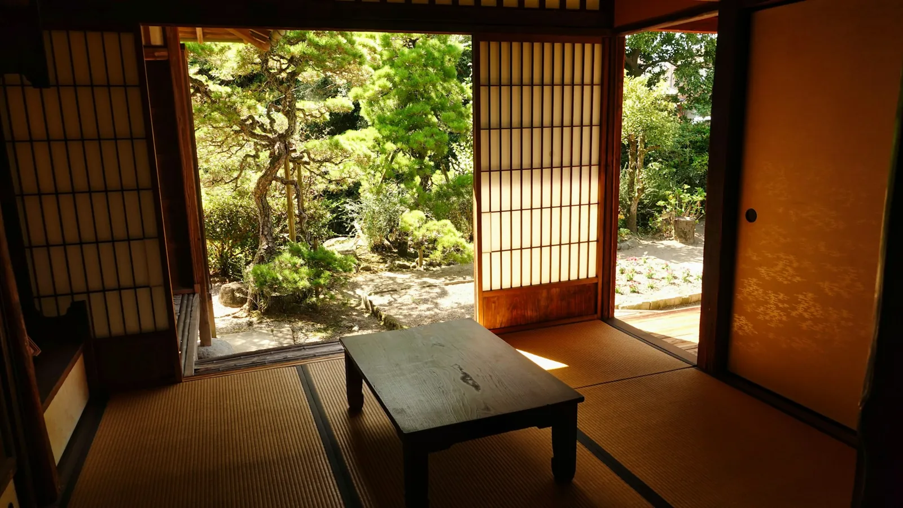

ラウンジ
お茶とコーヒーは、ご自由にどうぞ。チェックインの手続きも、こちらで座ったままお受けします。
- 時間
- 7:00〜22:00

建物は、庭の木々をぐるりと囲むように建っています。
どこを歩いても、ガラス越しに緑が見えるようにしました。
お茶とコーヒーは、ご自由にどうぞ。チェックインの手続きも、こちらで座ったままお受けします。

大浴場へ向かう廊下の先には、額縁のように庭が見えます。夜は足元だけを照らして、静かに歩けるようにしています。
